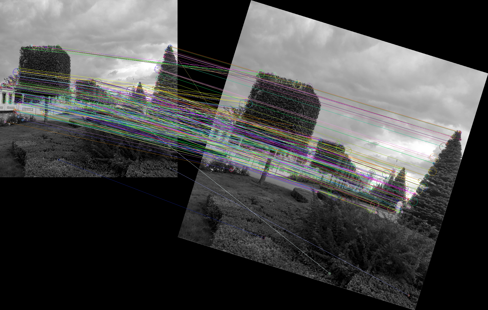

Overview
SIFT is a library which implements an algorithm of the same name which is
used for image features describing. The resulting descriptors are scale and
rotation invariant and insensitive to noise.
An example:
(let* ((data1 (sift/debug:load-image "img.png"))
;; Scale and rotate the image
(data2 (sift/debug:rotate-array (sift/debug:scale-array *foo* 1.4d0 1.4d0) 3d-1))
;; Calculate keypoints and descriptors
(kp1 (sift:descriptors (sift:gaussian-scale-space data1)))
(kp2 (sift:descriptors (sift:gaussian-scale-space data2)))
;; Find matches
(matches (sift:find-matches kp1 kp2)))
;; Draw matches using imago
(sift/debug:draw-matches data1 data2 matches))

Citation of the original algo: Lowe, D.G. Distinctive Image Features from Scale-Invariant Keypoints. International Journal of Computer Vision 60, 91–110 (2004). https://doi.org/10.1023/B:VISI.0000029664.99615.94